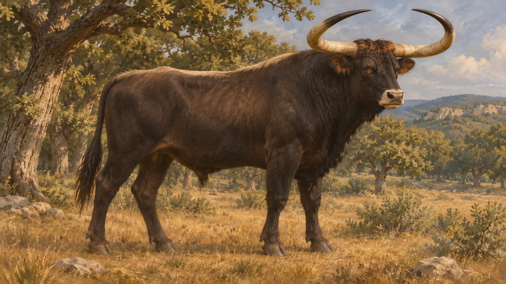
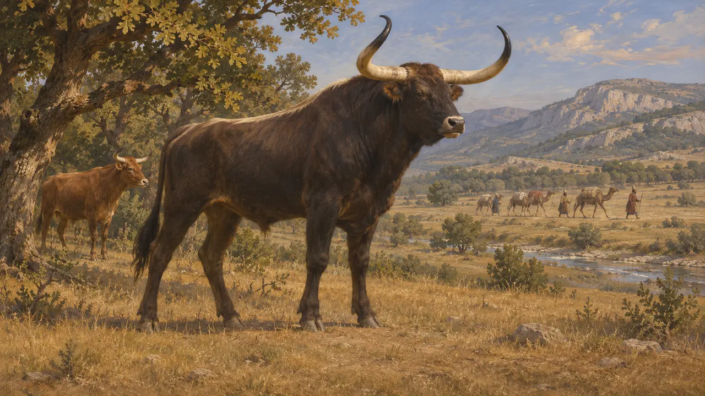
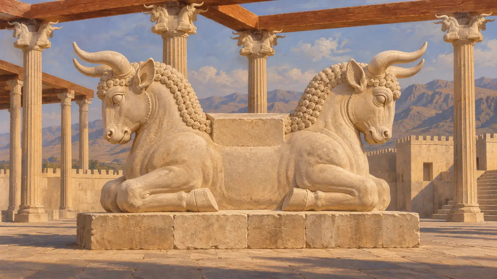
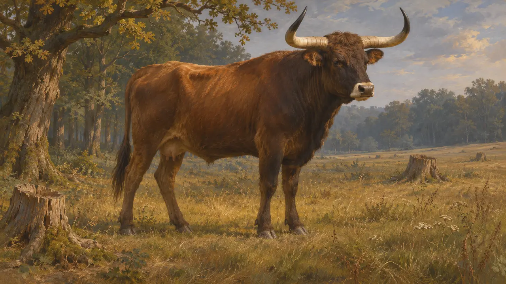

Энциклопедия › Животный мир и погода

Тур
Огромный дикий бык Европы и Азии, вымерший в 1627 г. н. э.; был известен Геродоту в 480 г. до н. э.
Тур (Bos primigenius) был огромным диким быком, предком домашнего скота, и обитал в Европе, Западной Азии и Северной Африке. Геродот сообщает, что дикие быки водились в стране, через которую в 480 году до н. э. в северной Греции шло войско Ксеркса. Последний известный тур погиб в Польше в 1627 году н. э.
В игре: Игра рисует туров как диких животных на уровнях «Истр» и «Афон», на землях, которые город не занял. Это только элемент пейзажа, и ни одно правило их не учитывает.

Что это было за животное
Античное свидетельствоСовременные зоологи описывают тура как дикого быка, намного крупнее большинства домашних коров, с длинными рогами, изогнутыми вперёд. Считается, что весь домашний скот происходит от него. Юлий Цезарь в «Записках о Галльской войне» описывает это животное в лесах Германии, спустя долгое время после персидской эпохи.
Caesar, Gallic War 6.28

Дикие быки на севере Греции
Античное свидетельствоГеродот говорит, что львы нападали на верблюдов, везших припасы Ксеркса, когда войско шло через земли северной Греции в 480 г. Он добавляет, что в той стране жили львы и дикие быки и что рога быков вывозили в Грецию. Он — единственный источник об этом походе в таких подробностях.
Herodotus 7.125-126

Дикие быки и царская власть на Ближнем Востоке
СпорныйАссирийские цари хвастались охотой на диких быков, а бык встречается и в ахеменидском искусстве, например в капителях колонн Персеполя в виде бычьих голов. Изображён ли на них именно тур, неясно, и эти образы не следует читать как доказательство того, как охотились персидские цари.
P. Briant, From Cyrus to Alexander, 2002

Вымирание
Античное свидетельствоОхота и утрата лесов и пастбищ в течение многих столетий сокращали численность тура по всей Европе. Историки относят гибель последнего животного, коровы, к 1627 году, в лесу Яктоув в Польше. Эта дата происходит из более поздних польских записей и современных исследований, а не из свидетельств персидского времени.
Modern zoological and historical summaries
Источники
- Herodotus 7.125-126
- Caesar, Gallic War 6.28
- P. Briant, From Cyrus to Alexander, 2002